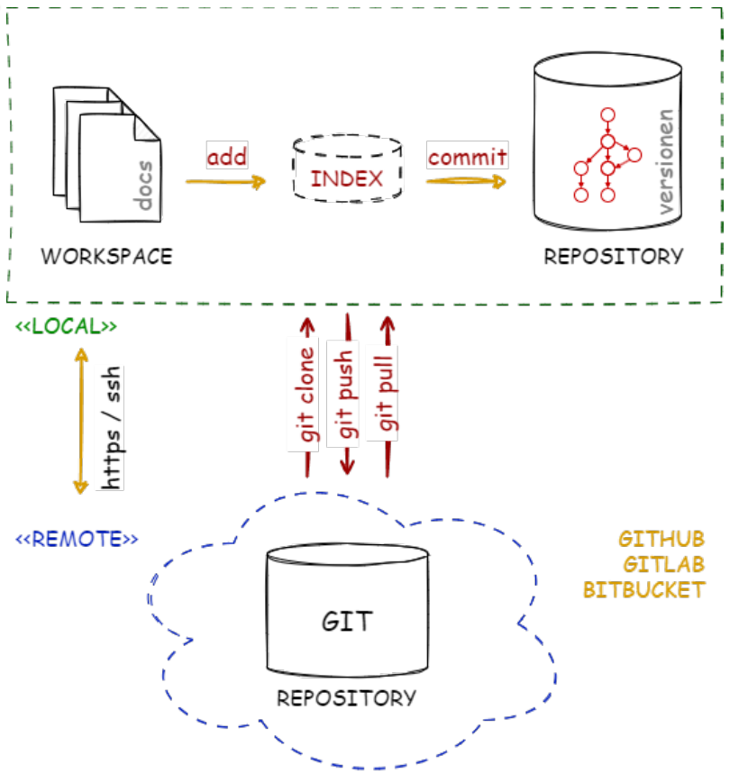

Lektion 3.4 — Teil 3: Fortgeschrittene Konzepte
Versionsverwaltung mit Git
Lernziele
- Zweck und Nutzen eines Versionskontrollsystems erklärenAbschnitt 1
- Git installieren und Benutzername sowie E-Mail konfigurierenAbschnitt 2
- Workspace, Index, lokales und entferntes Repository unterscheidenAbschnitt 3
- mit
add,commit,push,pullundclonearbeitenAbschnitt 3 - Konflikte erkennen und auflösen; Branches für neue Features einsetzenAbschnitt 3
- mit
.gitignorefestlegen, welche Dateien nicht versioniert werdenProjektschritt
1 — Versionsverwaltung
Ein Versionskontrollsystem (version control system, VCS) unterstützt Entwickler bei der Zusammenarbeit an einem Softwareprojekt und steigert ihre Effizienz. Es verfolgt jede Änderung am Code und speichert sie in einer speziellen Datenbank. So kann man z. B. bei einem Fehler den aktuellen Code mit einer älteren Version vergleichen oder auf einen älteren Stand zurückwechseln. Außerdem hat jeder Entwickler immer Zugriff auf den aktuellen Softwarestand, egal wo er sich befindet.
Der Nutzen von VCS:
- Historische Aufzeichnungen über alle Aktionen zu jeder Datei des Projekts.
- Gleichzeitiges Arbeiten mehrerer Teammitglieder an einem Softwareprojekt.
- Nachverfolgbarkeit der vorgenommenen Änderungen durch den Entwickler.
Git ist aktuell das meistverbreitete VCS. Das Open-Source-Projekt wurde 2005 ursprünglich von Linus Torvalds (Entwickler des Linux-Kernels) ins Leben gerufen.
2 — Installation und Konfiguration
- Download: git-scm.com
- Die Installation erfolgt mit den Standardeinstellungen.
Auf der Konsole wird nun ein Benutzer angelegt …
$ git config --global user.name "Hansi Hintermaeher"
$ git config --global user.email hansi.hintermaeher@spengergasse.at… und mit
$ git config --global user.name
$ git config --global user.emailüberprüft. Achtung: Das $-Zeichen wird nicht eingegeben, es ist Teil der Eingabeaufforderung der Konsole!
3 — Grundlegende Konzepte
Bei Git befindet sich ein Teil auf dem lokalen Computer (LOCAL), ein anderer auf einem Server
(REMOTE). Mit git push werden lokale Änderungen auf den Server übertragen, mit
git pull der aktuelle Stand vom Server ins lokale Repository. Den Inhalt eines entfernten
Repositorys holt man beim ersten Mal mit git clone.

Gängige Anbieter sind GitHub, Bitbucket und GitLab; sie können (mit Einschränkungen) kostenlos verwendet werden. Alternativ kann man Git auf beliebigen Servern selbst betreiben. Die Cloud-Anbieter bieten aber komfortable Web-Oberflächen mit Dashboards und Tools.
Der lokale Teil der Grafik genauer:
| Bereich | Bedeutung | Befehl |
|---|---|---|
| Workspace | das Verzeichnis mit allen Dateien; Änderungen werden hier nicht automatisch versioniert | – |
| Index (Staging Area) | vorgemerkte Änderungen für den nächsten Commit | git add Datei |
| lokales Repository | speichert jeden Zwischenstand, der „committed“ wurde – zu jedem kann man zurückschalten | git commit -m "Nachricht" |
| entferntes Repository | der gemeinsame Stand auf dem Server | git push, git pull, git clone |
Die mit git commit gespeicherten Änderungen sind zunächst nur lokal verfügbar. Mit
git push kommen sie ins entfernte Repository. Vorher muss lokal der aktuelle Stand vorliegen
(git pull). Dabei können Konflikte entstehen: Verschiedene Entwickler haben
unterschiedliche Änderungen vorgenommen, die nicht automatisch zusammengeführt werden können.
<<<<<<< HEAD
public void foo() {
for (int i=0; i<20; i++) {
System.out.println("Foo: " + i);
}
}
=======
public void foo() {
int i=0;
while (i < 40) {
System.out.println("f o o: " + i);
i += 2;
}
}
>>>>>>> df1806bd8ed8f89fbcc2ddd6d9ff1c5c92518e60
Oben (HEAD) steht die eigene Version, unten die vom Server. Die Entwickler müssen entscheiden,
wie der Konflikt behoben wird (z. B. nach Absprache oder Entscheidung der Teamleitung): Datei
bearbeiten, Markierungen entfernen, dann erneut add, commit und push.
Vor dem push muss der Code funktionsfähig sein: auf jeden Fall übersetzbar, und vorhandene
Funktionalität darf nicht beeinträchtigt werden. Das unterstreicht die Wichtigkeit von Testfällen
(mvn test), um sicherzustellen, dass keine neuen Fehler eingeführt wurden.
4 — Branches
Eine weitere wichtige Funktion sind Branches: Abzweigungen vom Hauptstamm der Software. Meist werden sie für neue Features angelegt. Das soll nicht in der Hauptversion (main branch) passieren, denn dort müssen möglicherweise Bugfixes für eine lauffähige Version gemacht werden. Das neue Feature entsteht in einem eigenen Branch und wird bei Fertigstellung wieder mit dem main branch zusammengeführt (merge).
$ git switch -c feature-csv # neuen Branch anlegen und wechseln
# ... programmieren, testen ...
$ git add src/main/java/Firma.java
$ git commit -m "CSV-Export der Firma"
$ git switch main # zurück zum Hauptzweig
$ git pull # aktuellen Stand holen
$ git merge feature-csv # Feature einarbeiten
$ git push| Befehl | Wirkung |
|---|---|
git init | neues Repository im aktuellen Ordner anlegen |
git status | zeigt geänderte, vorgemerkte und unbekannte Dateien |
git log --oneline | Liste der Commits |
git diff | Änderungen seit dem letzten Commit |
git restore Datei | Änderungen an einer Datei verwerfen |
IntelliJ bringt eine komplette Git-Oberfläche mit: VCS → Enable Version Control, Commit-Fenster (Strg+K), Push (Strg+Shift+K) und ein komfortables Werkzeug zum Auflösen von Konflikten.
Projektschritt
Die Personalverwaltung unter Versionskontrolle
Das Projekt kommt in ein Git-Repository. Damit nur Quellcode versioniert wird – keine Build-Ergebnisse, persönlichen IDE-Einstellungen oder vom Programm erzeugten Dateien –, legst du im Projektordner eine .gitignore an. Am Code ändert sich in dieser Lektion nichts.
# Build-Ergebnisse von Maven – werden bei jedem Build neu erzeugt
target/
# Einstellungen der Entwicklungsumgebung (persönlich)
.idea/
*.iml
.vscode/
# vom Programm erzeugte Dateien
*.ser
firma-neu.csv
# Betriebssystem
.DS_Store
Thumbs.db$ git init
$ git add .
$ git status # target/ und .idea/ dürfen nicht auftauchen
$ git commit -m "Personalverwaltung: Stand nach Lektion 3.3"
# Repository auf GitHub/GitLab anlegen, dann:
$ git remote add origin https://github.com/BENUTZER/personalverwaltung.git
$ git push -u origin main📁 Stand nach dieser Lektion: beispiele/3.4/ (mit .gitignore)
Häufige Fehler
3 Fehler · zum Aufklappen klicken
! [rejected] main -> main (fetch first).
Auf dem Server gibt es Commits, die lokal fehlen. Zuerst git pull, etwaige Konflikte lösen, testen, dann erneut git push.
Jeder Build erzeugt Hunderte geänderte Dateien, Kolleginnen bekommen deine IDE-Einstellungen.
.gitignore anlegen bevor man das erste Mal committet. Bereits versionierte Dateien mit git rm -r --cached target aus dem Index nehmen.
Der Code übersetzt nicht mehr; im Quelltext stehen <<<<<<< und >>>>>>>.
Beim Auflösen alle Markierungen entfernen, übersetzen und testen, erst dann git add und git commit.
Quiz
4 Fragen · zum Aufklappen klicken
Frage 1 Was macht git add Datei.java?
add → Index → commit → lokales Repository → push → entferntes Repository.Frage 2 Welcher Befehl überträgt deine lokalen Commits in das entfernte Repository?
push schickt Commits zum Server, pull holt neue Commits von dort, clone kopiert ein Repository zum ersten Mal auf den eigenen Rechner.Frage 3 git push wird mit ! [rejected] main -> main (fetch first) abgelehnt. Was ist zu tun?
Frage 4 Wofür ist die Datei .gitignore da?